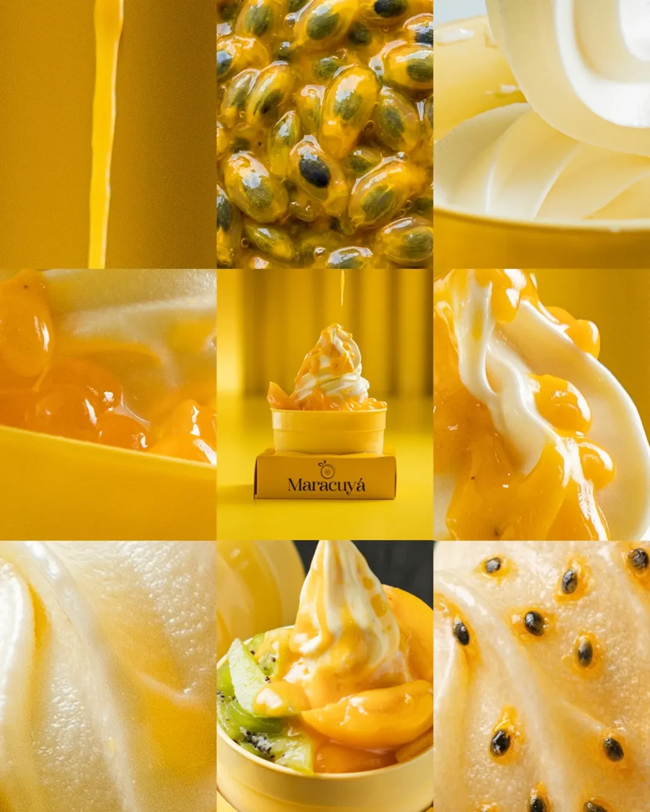
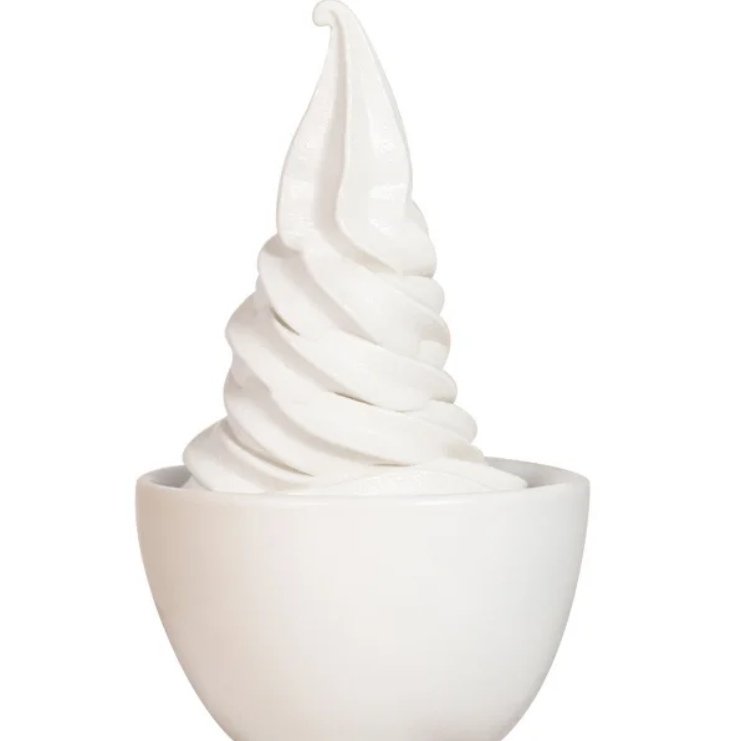
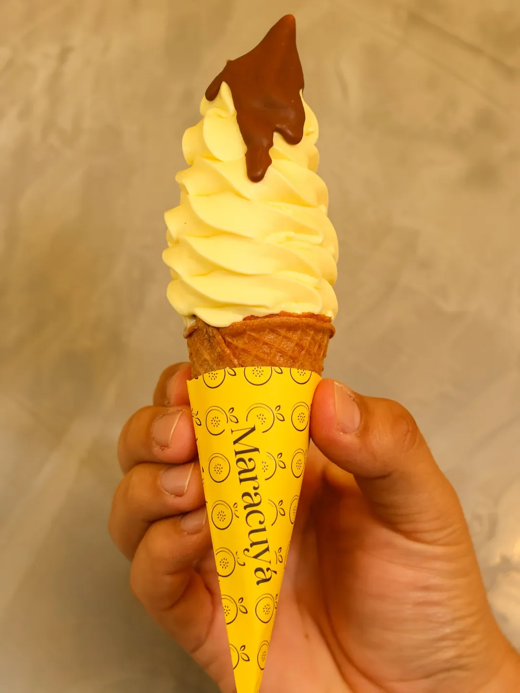

La base perfecta de yogurt griego natural, cremosa y con el toque justo de acidez. Es el lienzo ideal para que te diviertas combinándolo con nuestra gran variedad de toppings frescos y crujientes.


Todo el sabor y la textura premium de nuestro yogurt griego, pero formulado para quienes buscan una opción reducida en calorías o sin azúcar añadida. Disfruta de un postre saludable y ligero en cualquier momento del día.
La opción clásica para llevar tu helado a todos lados. Nuestras barquillas son crujientes y siempre frescas, diseñadas para ofrecerte ese "gustito" perfecto con la medida exacta de helado de yogurt.

¡Tu mejor amigo también es bienvenido! No hace falta que lo dejes en casa; en nuestro espacio ambos pueden relajarse y disfrutar de una experiencia refrescante en la mejor compañía.